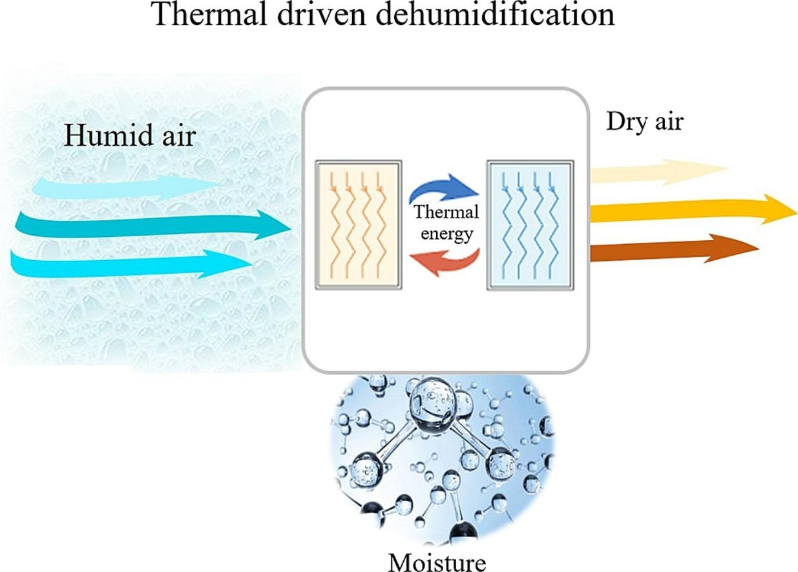
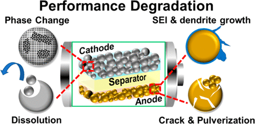
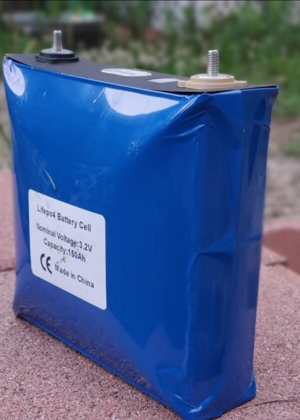
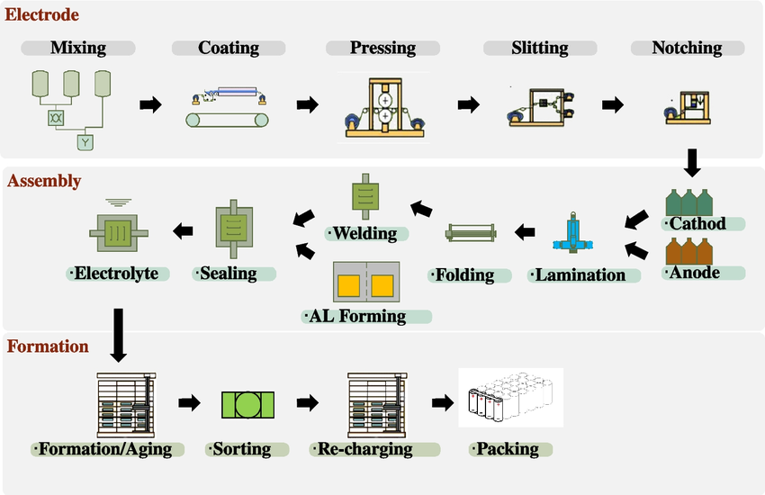
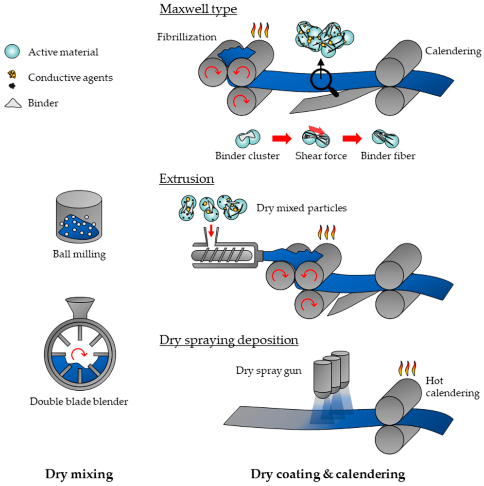
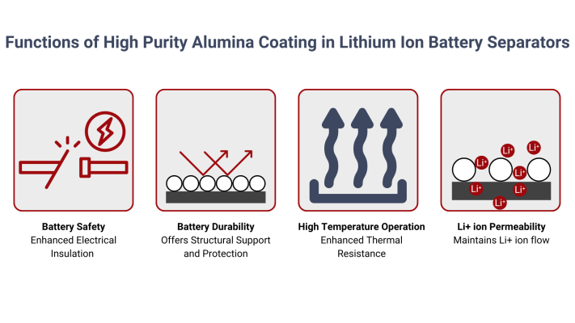
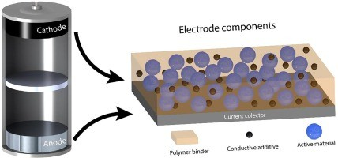
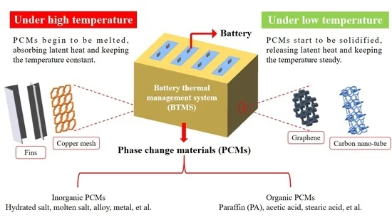
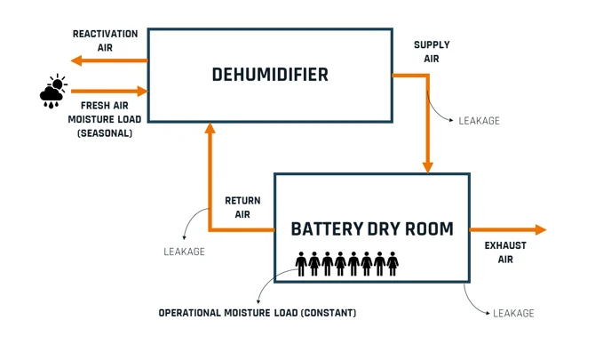

In the intricate world of lithium battery manufacturing and application, the meticulous control of moisture is not merely a quality measure – it is a fundamental imperative. Excessive moisture acts as a silent enemy, capable of triggering a cascade of detrimental effects that significantly compromise both the performance and the safety of these vital energy storage devices.
This article will delve into the profound impact of excessive moisture at every stage of lithium battery production and use, alongside outlining the critical measures employed to combat this pervasive threat.

We will explore the stringent humidity requirements within the manufacturing process, the strategic selection of low-moisture materials, and the advanced technical solutions implemented to maintain ultra-dry production environments. Finally, we will consider the current landscape of the Indian battery market and its approach to moisture control.
The Insidious Impact of Excessive Moisture on Lithium Battery Performance
The presence of excessive moisture within a lithium battery system can initiate a multitude of damaging processes, each contributing to a decline in overall performance and an increased risk of safety incidents. These negative effects include:
- Electrolyte Deterioration: Water readily reacts with common lithium battery electrolytes, resulting in their decomposition and undesirable byproduct formation. This degradation reduces the electrolyte's conductivity and its ability to effectively transport lithium ions.

- Battery Expansion: The chemical reactions between moisture and battery components can generate gases, causing the battery cell to swell. This expansion can lead to mechanical stress on internal components, potentially causing damage and affecting performance.

- Increased Internal Resistance: Moisture-induced degradation products can accumulate within the battery, hindering the flow of ions and electrons, thereby increasing the internal resistance. A higher internal resistance reduces the battery's power output and efficiency.
- Increased Self-Discharge Rate: Moisture can facilitate parasitic electrochemical reactions within the battery, leading to a higher rate of self-discharge. This means the battery loses its charge even when not in use, reducing its effective storage capacity.
- Increased Electrolyte Consumption: The decomposition reactions caused by moisture consume the electrolyte, reducing its overall volume and further impacting the battery's performance and lifespan.
Humidity: A Critical Control Point in Lithium Battery Production
Maintaining a strictly controlled, low-humidity environment is paramount throughout the lithium battery manufacturing process. Specific humidity targets are crucial at each stage:
- Electrode Production: During critical electrode processes, such as coating the active material onto current collectors and the subsequent rolling to achieve the desired density, the relative humidity must be rigorously maintained at 10% or less. This ensures the electrode materials remain dry and exhibit stable electrochemical performance.
- Assembly and Injection: In the subsequent stages of lamination (layering the electrodes and separator), winding the electrode stacks, assembling the cell components, injecting the electrolyte, and finally sealing the battery, the dew point humidity must be controlled within a stringent range of ≤-35°C to ≤-45°C. This ultra-low humidity prevents the detrimental effects of moisture on the delicate internal components and the electrolyte.

- Drying Treatment: Materials such as the electrodes and separators often undergo a dedicated drying process to remove any trace amounts of moisture. Electrodes that are not immediately used in the assembly process must be stored in a low-humidity environment or under vacuum to preserve their dryness.
- Raw Material Storage: The raw materials used in lithium battery production are highly susceptible to moisture absorption. Therefore, raw material storage warehouses must be equipped with effective moisture-proof measures to ensure these materials are maintained under appropriate humidity conditions.

Strategies for Minimizing Moisture Content Through Material Selection
The battle against moisture begins with the careful selection of materials that exhibit inherent resistance to moisture absorption:
- Select Low-Moisture Materials: Utilizing materials with inherently low moisture absorption rates, such as specific low-moisture ceramic separators, can effectively reduce the initial moisture content within the lithium battery.

- Optimize Material Formulation: Modifying the formulation of electrode materials, for example, by using organic-inorganic composite materials instead of traditional thickeners, can reduce the material's capacity to absorb and retain water.
- Environmental Control: Implementing strict humidity control during the entire production process, often utilizing specialized equipment like glove boxes that provide a low-water and oxygen environment, minimizes the opportunity for materials to absorb moisture from the surrounding air.

Technical Innovations for Reducing Humidity in the Production Environment
Manufacturers employ a range of sophisticated technical means to achieve and maintain the ultra-low humidity levels required for lithium battery production:
- Dehumidification Technology: Various dehumidification technologies are utilized, including cooling dehumidification, compression dehumidification, solid adsorption dehumidification (desiccant dehumidifiers), and liquid absorption dehumidification, to effectively remove moisture from the air within the production environment.
- Constant Temperature and Humidity Clean Rooms: Advanced clean rooms equipped with precise sensors and control systems are essential for accurately regulating both temperature and humidity. These rooms also incorporate high-efficiency filtration systems to maintain a clean production environment, free from dust and other contaminants that can exacerbate moisture-related issues.
- Battery Thermal Management Systems with Dehumidification: Some advanced battery thermal management systems integrate heat exchange circuits and flow control units capable of switching between cooling, heating, and dehumidification modes. This integrated approach can effectively reduce ambient humidity within specific production areas while also optimizing temperature control and saving valuable space.

Moisture Control in the Indian Battery Market: A Comparative Perspective
The Indian battery market, while rapidly expanding with a growing focus on lithium-ion technology to support electric vehicle adoption and energy storage, faces similar challenges regarding moisture control during manufacturing. Companies venturing into lithium-ion cell and battery production in India are increasingly recognizing the critical importance of maintaining low-humidity environments.
While the specific adoption rates of advanced dehumidification technologies and stringent humidity control protocols might vary across the Indian battery manufacturing landscape compared to more established global players, the fundamental understanding of moisture's detrimental effects remains consistent. As the Indian market matures and aims for higher quality and reliability in its domestically produced lithium-ion batteries, investments in sophisticated dry room facilities and rigorous moisture control measures are expected to rise.

Several Indian companies and international players setting up manufacturing units in India are likely to implement best practices in moisture control, drawing upon global standards and expertise. Collaborations with specialized environmental control solution providers, as seen globally, will be crucial for establishing and maintaining the ultra-dry conditions necessary for high-quality lithium-ion battery production in India. Furthermore, government initiatives promoting quality standards and reliability in the burgeoning EV and battery sectors will likely further emphasize the importance of stringent manufacturing process controls, including humidity management.
Conclusion: Safeguarding Lithium Battery Performance Through Rigorous Moisture Control
Strict and comprehensive moisture control is an indispensable element of the lithium battery production process. Through meticulous humidity management at every stage, the strategic selection of low-moisture materials, and the implementation of advanced dehumidification technologies, the detrimental effects of moisture on battery performance and safety can be effectively mitigated. This commitment to dryness is paramount for enhancing the overall performance, extending the lifespan, and ensuring the safe operation of lithium batteries, thereby paving the way for a more reliable and sustainable energy future, both globally and within the rapidly evolving Indian market.